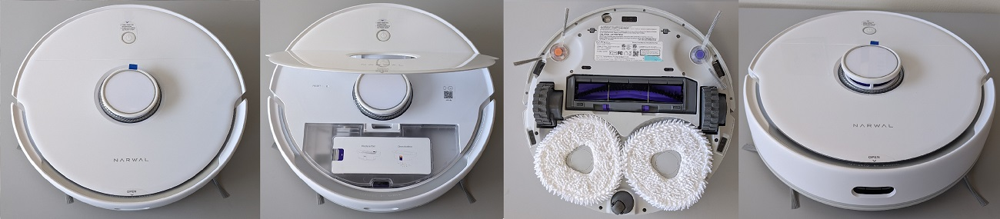

Narwal Freo

ModelID: narwal.freo
Codename:
SKU: YJCC012
OEM: Narwal
Firmware format: signed, encrypted
Sound format:
SOC: Allwinner MR813 (4x)
RAM: 1 GByte
Flash: 4GByte eMMC
MCU: GD32F303*ET6
WiFi: RTL8723DS(BT+WiFi)
OS: OpenWRT (custom Tina) (4.9.x)
Released: Q4/2022
Features
LIDAR: y
Camera: n
Mop: y (rotating)
Waterpump: y (in basestation)
Towerbumper: y
IR dropsensors: 4x
IR sidesensors: y
Frontsensor: IR
Carpetsensor: y (ultrasonic)
Brush type: rubber+brush
Auto Empty: No
Auto Mop Cleaning: Yes (with default base station)
Cloud support: , narwal
Rootability
Root supported? : ()
Root method public? : n
Root complexity:
Valetudo support: n
Ressources
Buy on Amazon.com (affiliate link*)
Keepa.com price history for Amazon.com (ASIN:B0B4D99WGK):

* We are Amazon affiliate partner and might get a provision. Please verify the exact device name and type before purchasing!
Comments
Communication with base: Zigbee 3.0
Firmwares
| Type | MD5 | Filename | Version | Datetime | Size | Regions |
Changelogs
These logs are extracted from official firmware releases. They might or might not contain useful information.
| Type | Version | Datetime | Changelog | Diff |
You miss a device here and feel generous? Check out the Donations page here ;)
<-- Back to the overview
This information is collected over time by my rooted devices and stored in a database. There might be firmware older than this, but it is not listed here as I did not own a particular device at that time. There is no guarantee for accuracy of this information, as the availability of firmware might be device specific and region specific. Sometimes I don't have enough devices to cover all regions.
Note: If you use information from this table, please reference it, eg. "Dennis Giese, Robotinfo, https://robotinfo.dev".
Please contact me prior using any of the images.{kind=link}